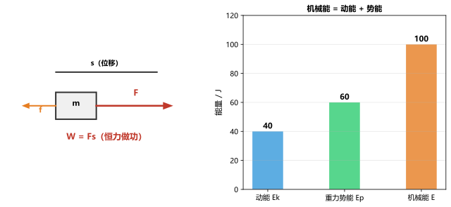

专题一：机械运动与速度
力学机械运动：物体位置随时间的变化。参照物：判断运动状态时选作标准的物体。速度：v=s/t。匀速直线运动中速度不变。平均速度=总路程/总时间。单位换算：1m/s=3.6km/h。测量工具：刻度尺（长度）、停表（时间）。
例：汽车2h行驶144km，求平均速度（m/s和km/h）
解：v=144km/2h=72km/h。换算：72÷3.6=20m/s
例：甲乙两车同时同向出发，甲速30m/s，乙速20m/s，5min后相距多远
解：相对速度v=30-20=10m/s，s=10×300=3000m=3km
• 人步速1.2m/s合多少km/h 答案：4.32km/h
• 汽车先60km/h行驶1h，再40km/h行驶1h，平均速度 答案：50km/h
专题二：质量与密度
力学质量：物体所含物质的多少，不随位置、形状、状态改变。单位：kg、g、t、mg。天平使用：调水平→调平衡→左物右码→读数。密度：ρ=m/V，反映物质的一种特性（同种物质密度相同）。单位：1g/cm³=10³kg/m³。水的密度1.0×10³kg/m³。测密度：天平测质量，量筒排水法测体积。
例：体积20cm³的铝块质量54g，求铝的密度，并判断是否是纯铝（ρ纯铝=2.7g/cm³）
解：ρ=54/20=2.7g/cm³。等于纯铝密度，是纯铝。
例：一个瓶子装满水总质量500g，装满油总质量450g，瓶质量100g，求油的密度
解：m水=500-100=400g，V瓶=400/1=400cm³。m油=450-100=350g，ρ油=350/400=0.875g/cm³
• 体积50mL、质量175g的液体密度 答案：3.5g/cm³
• 一块砖密度2g/cm³，切去一半后密度 答案：不变，仍为2g/cm³
专题三：力与受力分析
力学力：物体对物体的作用，物体间力的作用是相互的。力的三要素：大小、方向、作用点。单位：牛顿(N)。重力：G=mg（g=9.8N/kg≈10N/kg），方向竖直向下。弹力：F=kx（弹簧伸长量与拉力成正比）。摩擦力：静摩擦力、滑动摩擦力（与压力和接触面粗糙程度有关，与接触面积无关）。二力平衡：同一物体、等大、反向、共线。受力分析步骤：一重二弹三摩擦。
例：质量为50kg的人站在水平地面上，求他对地面的压力（g=10N/kg）
解：G=mg=50×10=500N。静止时支持力N=G=500N，压力=支持力=500N（作用力与反作用力）
例：用F=30N的水平推力推静止在水平面上的10kg物体，物体未动，求摩擦力
解：物体静止→受力平衡→f=F=30N（方向与F相反）
• 书静止在桌面上，受几对平衡力 答案：一对（重力与支持力）
• 摩擦力大小与什么因素有关 答案：压力大小、接触面粗糙程度（与面积无关）
专题四：压强
力学压强：p=F/S（压力与受力面积之比）。单位：帕斯卡(Pa)，1Pa=1N/m²。增大压强：增大压力或减小受力面积（刀刃、针尖）。减小压强：减小压力或增大受力面积（履带、书包带）。液体压强：p=ρgh，与深度和液体密度有关，与方向无关。连通器：同种液体静止时各液面相平。大气压强：标准大气压p₀=1.013×10⁵Pa≈10⁵Pa。马德堡半球实验证明大气压存在，托里拆利实验测量大气压值。
例：体重600N的人，每只脚接触面积150cm²，双脚站立时对地面的压强
解：S=150×2=300cm²=0.03m²，p=600/0.03=20000Pa
例：水深10m处的压强（g=10N/kg）
解：p=ρgh=1.0×10³×10×10=1×10⁵Pa=1标准大气压
• 针尖面积0.05mm²，手压针用5N力，求压强 答案：1×10⁸Pa
• 潜水员在水下20m承受压强 答案：2×10⁵Pa（约2atm）
专题五：浮力
力学浮力：浸在液体（或气体）中的物体受到向上的力。产生原因：上下表面压力差。阿基米德原理：F浮=G排=ρ液gV排（排开液体的重力）。浮沉条件：F浮>G→上浮（最终漂浮）；F浮=G→悬浮；F浮密度关系：ρ物<ρ液→漂浮；ρ物=ρ液→悬浮；ρ物>ρ液→下沉。应用：轮船（空心增大V排）、潜水艇（改变自重）、气球飞艇（改变浮力）。
例：体积0.01m³的物体浸没在水中所受浮力（g=10N/kg）
解：F浮=ρ水gV排=1.0×10³×10×0.01=100N
例：一块冰漂浮在水面上，露出水面体积占总体积的几分之几（ρ冰=0.9g/cm³）
解：漂浮：F浮=G冰→ρ水gV排=ρ冰gV冰→V排/V冰=ρ冰/ρ水=0.9/1.0=0.9，露出1/10
• 铁块在水中下沉，但钢铁造的轮船却能浮在水面，为什么 答案：轮船空心增大了V排
• 浸没在液体中的物体受到的浮力与深度有关吗 答案：无关（V排不变，ρ液不变，F浮不变）
专题六：简单机械
力学杠杆：在力的作用下绕固定点转动的硬棒。杠杆平衡条件：F₁L₁=F₂L₂。三类杠杆：省力杠杆（L₁>L₂如撬棍）、费力杠杆（L₁滑轮：定滑轮（不省力可改变方向）、动滑轮（省一半力不可改变方向）、滑轮组（既省力又改变方向，F=G/n，n为承重绳段数）。斜面：省力但费距离，FL=Gh。
例：用动滑轮提升200N的重物（不计滑轮重和摩擦），拉力F多大
解：动滑轮省一半力：F=G/2=200/2=100N
例：杠杆动力臂0.4m，阻力臂0.1m，阻力100N，求动力
解：F₁L₁=F₂L₂ → F₁×0.4=100×0.1 → F₁=25N（省力杠杆）
• 旗杆顶部用的什么滑轮 答案：定滑轮（改变方向）
• 物重300N，滑轮组有3段绳承重，拉力至少多少 答案：100N
专题七：功、功率与机械能
力学功：W=Fs（力与在力的方向上移动距离的乘积），单位焦耳(J)。做功两要素：有力且在力的方向上有距离。不做功的情况：有力无距（搬石头没动）、有距无力（惯性滑行）、力⊥距（水平提水桶）。功率：P=W/t=Fv，单位瓦特(W)。机械效率：η=W有/W总×100%。机械能：动能+势能（重力势能+弹性势能）。动能与质量和速度有关；重力势能与质量和高度有关。机械能守恒：只有动能与势能转化时，机械能总量不变。

做功 W=Fs（左）与机械能组成（右）
例：用50N的水平拉力使10kg的物体沿水平面匀速前进5m，求拉力做功
解：W=Fs=50×5=250J（重力与移动方向垂直，不做功）
例：起重机将2000kg的重物匀速提升10m，用时20s，求功率和做功（g=10N/kg）
解：G=2000×10=20000N，W=Gh=20000×10=200000J，P=W/t=200000/20=10000W
• 举重运动员将120kg杠铃举高2m做功多少 答案：2400J
• 功率60kW的汽车行驶10min做功多少 答案：3.6×10⁷J
专题八：欧姆定律
电学欧姆定律：I=U/R（导体中的电流与两端电压成正比，与电阻成反比）。串联：I=I₁=I₂，U=U₁+U₂，R=R₁+R₂，U₁/U₂=R₁/R₂。并联：I=I₁+I₂，U=U₁=U₂，1/R=1/R₁+1/R₂，I₁/I₂=R₂/R₁。伏安法测电阻：R=U/I。滑动变阻器：改变接入电路电阻丝长度来改变电阻。连接方法：一上一下。

串联电路（左）与并联电路（右）
例：R₁=6Ω与R₂=4Ω串联接入12V电源，求总电阻、电流和R₂两端电压
解：R总=6+4=10Ω，I=12/10=1.2A，U₂=IR₂=1.2×4=4.8V
例：R₁=12Ω与R₂=6Ω并联，干路电流1.5A，求电源电压和通过各电阻的电流
解：R总=1/(1/12+1/6)=4Ω，U=IR总=1.5×4=6V，I₁=6/12=0.5A，I₂=6/6=1A
• 3Ω和6Ω串联总电阻 答案：9Ω
• 5Ω和10Ω并联总电阻 答案：10/3≈3.33Ω
专题九：电功率与电热
电学电功：W=UIt，单位焦耳(J)。常用单位：千瓦时(kWh)，1kWh=3.6×10⁶J。电功率：P=UI=W/t=I²R=U²/R。额定功率和实际功率：灯泡亮度由实际功率决定。焦耳定律：Q=I²Rt（电流通过导体产生的热量与电流平方、电阻、时间成正比）。家庭电路：火线零线（220V），保险丝（电阻率大熔点低），三孔插座接地线。
例：标有"220V 100W"的灯泡正常发光时电流和电阻
解：I=P/U=100/220≈0.455A，R=U²/P=220²/100=484Ω
例：将"220V 40W"灯泡接在110V电源上，实际功率多少
解：电阻R=U²/P=220²/40=1210Ω。P实=U实²/R=110²/1210=10W（实际功率为额定¼）
• 电流通过10Ω电阻产生热量，2A通电10s 答案：Q=400J
• 1kWh电能供100W灯泡用多久 答案：10h
专题十：家庭电路与安全用电
电学家庭电路组成：进户线→电能表→总开关→保险盒→用电器。火线和零线：火线220V，零线0V，测电笔判断（氖管发光是火线）。三孔插座：左零右火上接地（接地线防止触电）。安全用电原则：不接触低压带电体、不靠近高压带电体；湿手不碰电器；有金属外壳的电器要接地。触电急救：切断电源或用绝缘物挑开电线。
例：为什么不能用铜丝替代保险丝
解：保险丝用电阻率较大、熔点较低的铅锑合金制成。铜丝电阻率小、熔点高，电流过大时不易熔断，起不到保护作用。
例：家庭电路中各用电器之间是串联还是并联？为什么？
解：并联。原因：①各用电器可独立工作互不影响 ②各用电器两端电压均为220V ③干路电流等于各支路电流之和。
• 三孔插座除火线零线外第三孔接什么 答案：地线（接地保护）
• 测电笔使用时手要接触笔尾____ 答案：金属体（笔尾接触使电路导通）
专题十一：磁现象与电磁感应
电学磁体：有磁性（吸引铁钴镍），两端磁性最强为磁极（N极S极），同名相斥异名相吸。磁场：磁体周围存在，磁感线从N极出发回到S极。电流的磁效应（奥斯特实验）：通电导线周围存在磁场。电磁铁：插入铁芯的螺线管，磁性强弱由电流大小和匝数控制。电磁感应（法拉第）：闭合电路一部分导体在磁场中做切割磁感线运动时产生感应电流。发电机：电磁感应→机械能转化为电能。电动机：通电线圈在磁场中受力转动→电能转化为机械能。
例：奥斯特实验说明了什么
解：通电导线周围存在磁场（电流的磁效应），磁场方向与电流方向有关。
例：发电机和电动机的工作原理分别是什么
解：发电机：电磁感应原理，机械能→电能。电动机：通电导体在磁场中受力的作用，电能→机械能。
• 影响电磁铁磁性强弱的因素 答案：电流大小和线圈匝数
• 交流发电机产生的是____电 答案：交流电（方向和大小周期性变化）
专题十二：物态变化
热学六种物态变化：①熔化（固→液，吸热）②凝固（液→固，放热）③汽化（液→气，吸热）④液化（气→液，放热）⑤升华（固→气，吸热）⑥凝华（气→固，放热）。晶体与晶体：晶体有固定熔点（如冰、金属），非晶体无固定熔点（如蜡、玻璃）。蒸发与沸腾：蒸发在任何温度下进行且只在液体表面；沸腾在沸点进行且内部和表面同时发生。影响蒸发快慢的因素：温度、表面积、空气流速。
例：夏天从冰箱里拿出冰棍，周围冒"白气"，这是哪种物态变化？冰棍熔化过程是吸热还是放热？
解："白气"是空气中的水蒸气遇冷液化形成的小水滴（不是水蒸气）。冰棍熔化是吸热过程。
例：用久了的灯泡内壁发黑，这是为什么
解：钨丝先升华（固态钨→气态钨，高温），气态钨遇到冷的玻璃壁凝华（气态→固态）附着在内壁上，灯泡变黑。
• 0℃的冰比0℃的水更冷吗？为什么感觉冰更冷 答案：温度相同，但冰熔化要吸热降温
• 烧水时壶嘴冒"白气"是汽化还是液化 答案：液化（水蒸气遇冷液化）
专题十三：内能与比热容
热学分子动理论：物质由分子原子构成，分子永不停息做无规则运动（扩散现象），分子间有引力和斥力。内能：物体内所有分子动能和势能之和。温度越高分子运动越剧烈内能越大。改变内能方式：做功（机械能↔内能）和热传递（传导/对流/辐射）。比热容：c=Q/(mΔt)，反映物质吸放热能力。水的比热容大（4.2×10³J/kg·℃）。热值：q=Q/m（燃料完全燃烧放出的热量）。
例：2kg水从20℃加热到100℃，吸收多少热量（c水=4.2×10³J/kg·℃）
解：Q=cmΔt=4.2×10³×2×(100-20)=6.72×10⁵J
例：为什么沿海地区昼夜温差比内陆小
解：水的比热容比沙石大得多。白天吸收相同热量时水升温少；晚上放出相同热量时水降温少。沿海地区多水，所以温差小。
• 质量为5kg的铝块温度升高40℃吸收热量多少（c铝=0.88×10³J/kg·℃） 答案：1.76×10⁵J
• 热值3×10⁷J/kg的燃料完全燃烧200g放热多少 答案：6×10⁶J
专题十四：光的反射与平面镜成像
光学光的反射定律：三线共面（入射光线、反射光线、法线在同一平面内），两线分居（反射光线和入射光线分居法线两侧），两角相等（反射角=入射角）。镜面反射和漫反射：都遵循反射定律。平面镜成像：等大、等距、正立虚像、左右相反。成像原理：光的反射。应用：穿衣镜、潜望镜。
例：入射光线与镜面夹角30°，入射角多少？增大10°后反射角多少？反射光线与入射光线的夹角多少？
解：入射角=90°-30°=60°。增大后入射角70°，反射角=70°，夹角=140°。
例：身高1.7m的人站在平面镜前2m处，像高多少？像到镜面距离多少？人向镜走近0.5m，像的大小变吗？
解：像高=1.7m（等大）。像距=2m（与物距相等）。走近后像不变大（平面镜成等大虚像）。
• 镜面反射和漫反射都遵循____定律吗 答案：是（都遵循反射定律）
• 晚上在暗室中，用白布和平面镜哪个能在墙上看清字 答案：白布（漫反射使各个方向都能看到）
专题十五：光的折射与透镜
光学光的折射：光从一种介质斜射入另一种介质时传播方向发生偏折。光从空气→水中折射角小于入射角，光从水→空气中折射角大于入射角。凸透镜：中间厚边缘薄，对光有会聚作用。凹透镜：中间薄边缘厚，对光有发散作用。凸透镜成像规律：u>2f倒立缩小实像（照相机），f眼睛：晶状体相当于凸透镜，视网膜成倒立缩小的实像。近视眼配凹透镜矫正，远视眼配凸透镜矫正。

光从空气斜射入水中发生折射
例：物体在凸透镜前30cm处（f=10cm），求像距和成像性质
解：1/f=1/u+1/v→1/10=1/30+1/v→v=15cm。u>2f，成倒立缩小实像。
例：近视眼的成因和矫正方法
解：成因：晶状体太厚（或眼球前后径太长），远处物体成像在视网膜前方。矫正：配戴凹透镜（使光线发散后进入眼睛，像后移落在视网膜上）。
• 凸透镜成实像时，物距增大像距如何变化 答案：物距增大像距减小，像变小（物远像近像变小）
• 放大镜的成像原理：物体放在凸透镜____ 答案：一倍焦距以内（成正立放大虚像）